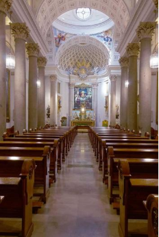
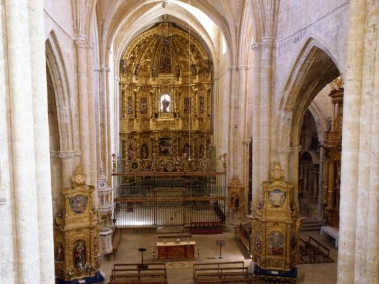

Coro Universitario Complutense
Próximas actuaciones

Sábado, 2 de junio 19 h.
W.A. Mozart "Missa Brevis KV 65"
Coro del Oratorio del Caballero de Gracia
Coro Universitario Complutense
Oratorio del Caballero de Gracia | Caballero de Gracia, 5 28

Sábado, 16 de junio 20 h.
W.A. Mozart "De lo profano a lo religioso"
Coro Universitario Complutense
Ermita de la Virgen del Puerto | Pº de la Virgen del Puerto, 4 28013 MADRID

Viernes, 31 de agosto 20,30 h.
W.A. Mozart "De lo profano a lo religioso"
Coro Universitario Complutense
Iglesia de San Hipólito | Plaza de San Hipólito el Real, s/n. 34439 Támara de Campos (Palencia)

Octubre 2018 (Fecha/Hora por confirmar)
Ciclo Música de Cerca
Concierto en Madrid